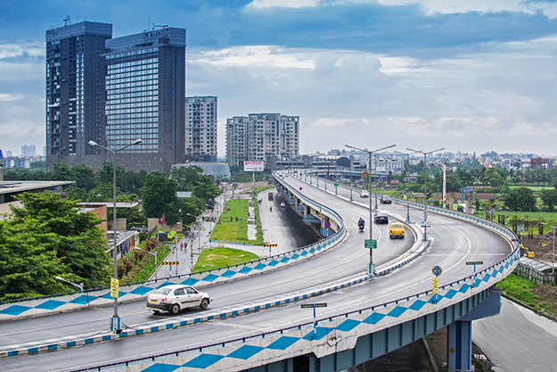

.gif)
CITY ATTRACTION
Kolkata City Tour Guide
Kolkata is the proud intellectual capital of the country.It used to be the capital of the
British East India Company and the evidence of the British colonization persists there in the city.
The Victoria Memorial is a grand structure constructed in the memory of Queen Victoria.
This building houses a number of rare specimens of the historical preserves of the land.
The Hanging Howrah Bridge is an architectural marvel of the country. The second largest planetarium in Asia,
the Birla Planetarium is another site that attracts attention of all The recently built Vidyasagar Setu is
another architectural wonder, connects both the banks of the Hooghly River. The Metro Railway, Indian Museum,
Dalhousie Square, National Library,St. Paul's Cathedral, Shaheed Minar, Eden Garden, Fort William, Rat Park and
Marble Palace are some of the other sites of the city that are worth visiting. Kolkata City Tours is proud to be a specialized service and the owners have been providing service and creating
friendships that cannot be matched by any large-scale corporate tours. We feel that the best way to experience
the "City of Joy" is hanging out with someone who's knowledgeable and accommodating. Our guides will provide you
with an experience that cannot be achieved by sitting on a bus with scores of other people.All our city tours in
Kolkata are assisted by knowledgeable guides, who can speak English, Hindi and Bengali. The vehicles we generally
use for Kolkata City Tours and Kolkata sightseeing are: |
SEARCH BY CATEGORY |
Some Facts About CityHistory of KolkataImportance as a Tourist Destination Role as a Commercial Hub of Eastern India Top 10 Visiting Destinations |
Photo Gallery


|